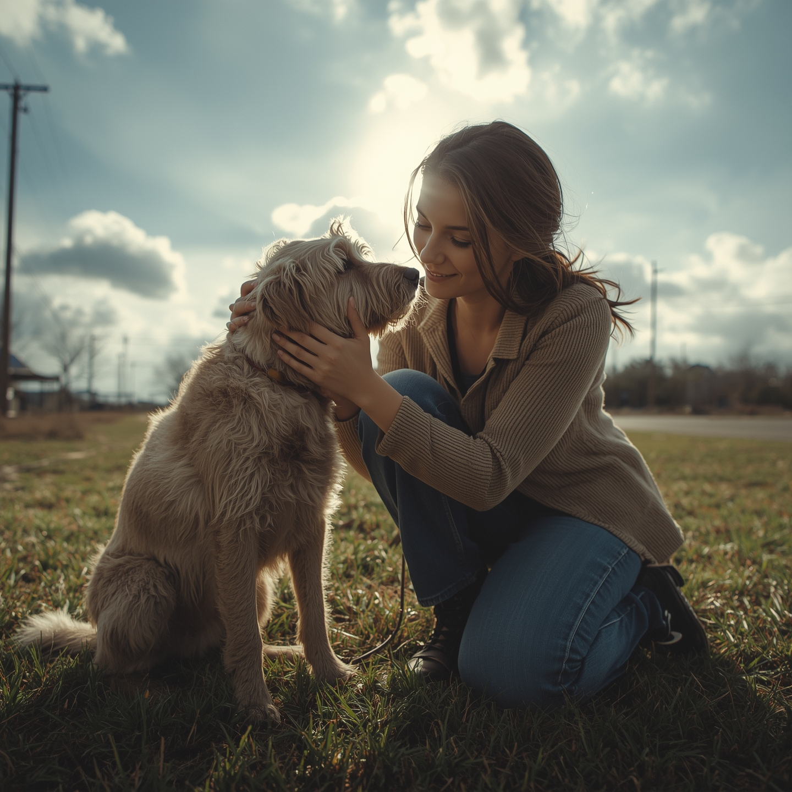

Você já imaginou a alegria de ver um animal abandonado descobrindo o que é o amor e a segurança de um lar? No Santuário Pata Amigas, essa é a nossa missão e nossa maior recompensa.
Resgatamos e reabilitamos cães e gatos que passaram por momentos difíceis. Agora, eles estão prontos para virar a página e começar uma nova vida ao seu lado.
Nossa página web está cheia de histórias emocionantes, fotos dos nossos residentes e todas as informações para você se tornar parte dessa jornada. Seja adotando, doando ou oferecendo seu tempo, sua ajuda é fundamental.
Abrace a esperança. Mude uma vida.

De um sonho a um lar: o nascimento do Pata Amigas
O Santuário Pata Amigas nasceu de uma simples, mas poderosa, certeza: nenhum animal merece ser esquecido.
Tudo começou com Ryllary, uma voluntária dedicada em abrigos de animais por anos. Ela viu de perto a alegria de um animal resgatado, mas também o desespero de tantos outros que viviam em condições precárias, sem esperança de adoção. A rotatividade nos abrigos era alta e os recursos, escassos. Muitos animais com problemas de saúde ou mais velhos acabavam sendo deixados para trás.
Ryllary sonhava com um lugar onde cada cão e gato pudesse ser mais do que apenas um número. Um santuário. Um refúgio de paz onde o tempo e o amor não seriam limitados. Um lugar para curar não apenas os ferimentos físicos, mas também os corações partidos.
A ideia, que parecia distante, ganhou força em 2024. Ryllary resgatou Joaninha, uma cadela idosa e cega, abandonada em um terreno baldio. A maioria das pessoas a via como um caso "perdido", mas Ryllary enxergou nela um espírito resiliente. O processo de reabilitação de Joaninha foi lento, cheio de desafios, mas o vínculo que se formou entre elas se tornou a prova viva de que o amor e a paciência podem, sim, transformar vidas.
Foi a partir dessa experiência que Ryllary percebeu que seu sonho precisava se tornar realidade. Com a ajuda de amigos, a mobilização da comunidade e muito esforço, um pequeno terreno foi alugado e os primeiros canis, construídos. O Santuário Pata Amigas estava, enfim, de portas abertas.
Hoje, somos o lar de dezenas de cães e gatos, cada um com sua própria história de superação. Não somos apenas um abrigo; somos uma família. Um lugar onde os animais não esperam pela adoção, mas vivem com dignidade, cercados de cuidado, carinho e respeito. Joaninha, a primeira residente, nos lembra todos os dias do motivo pelo qual o Pata Amigas existe: para dar uma nova chance àqueles que mais precisam.